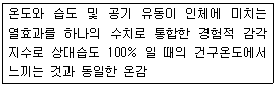
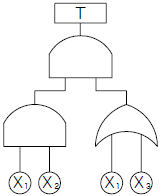
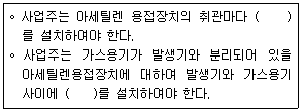
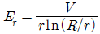

산업안전기사 (2015-08-16 기출문제)
1과목: 안전관리론
1. 하인리히의 재해손실비 산정방식에서 직접비로 볼 수 없는 것은?
- 직업재활급여
- 간병급여
- 생산손실급여
- 장해급여
(정답률: 82%)

2. 다음 중 태도교육을 통한 안전태도 형성요령과 가장 거리가 먼 것은?
- 이해한다.
- 칭찬한다.
- 모범을 보인다.
- 금전적 보상을 한다.
(정답률: 89%)
3. 무재해운동의 추진기법에 있어 위험예지훈련 제4단계(4라운드) 중 제2단계에 해당하는 것은?
- 본질추구
- 현상파악
- 목표설정
- 대책수립
(정답률: 81%)
4. 암실에서 정지된 소광점을 응시하면 광점이 움직이는 것 같이 보이는 현상을 운동의 착각 현상 중 ‘자동운동’이라 한다. 다음 중 자동운동이 생기기 쉬운 조건에 해당되지 않는 것은?
- 광점이 작은 것
- 대상이 단순한 것
- 광의 강도가 큰 것
- 시야의 다른 부분이 어두운 것
(정답률: 67%)
5. 산업안전보건법령상 관리감독자의 업무내용에 해당되는 것은? (단, 기타 해당 작업의 안전ㆍ보건에 관한 사항으로서 고용노동부령으로 정하는 사항은 제외한다.)
- 사업장 순회점검ㆍ지도 및 조치의 건의
- 물질안전보건자료의 게시 및 또는 비치에 관한 보좌 및 조언ㆍ지도
- 해당 작업의 작업장 정리ㆍ정돈 및 통로확보에 대한 확인ㆍ감독
- 근로자의 건강장해의 원인 조사와 재발 방지를 위한 의학적 조치
(정답률: 58%)
6. 의무안전인증 대상 보호구 중 AE, ABE종 안전모의 질량 증가율은 몇 % 미만이어야 하는가?
- 1%
- 2%
- 3%
- 5%
(정답률: 76%)
7. 산업안전보건법령상 사업 내 안전ㆍ보건 교육의 교육대상별 교육내용에 있어 관리감독자 정기안전ㆍ보건교육에 해당하는 것은?
- 작업 개시 전 점검에 관한 사항
- 사고 발생시 긴급조치에 관한 사항
- 건강증진 및 질병 예방에 관한 사항
- 산업보건 및 직업병 예방에 관한 사항
(정답률: 64%)
8. 하인리히의 재해발생과 관련한 도미노 이론으로 설명되는 안전관리의 핵심단계에 해당되는 요소는?
- 외부 환경
- 개인적 성향
- 재해 및 상해
- 불안전한 상태 및 행동
(정답률: 80%)
9. 모랄서베이(Morale Survey)의 주요방법 중 태도조사법에 해당하지 않은 것은?
- 질문지법
- 면접법
- 통계법
- 집단토의법
(정답률: 70%)
10. 다음 중 재해를 한번 경험한 사람은 신경과민 등 심리적인 압박을 받게 되어 대처능력이 떨어져 재해가 빈번하게 발생된다는 설(設)은?
- 기회설
- 암시설
- 경향설
- 미숙설
(정답률: 63%)
11. 산업안전보건법령상 안전보건개선계획서에 개선을 위하여 포함되어야 하는 중점개선 항목에 해당되지 않는 것은?
- 시설
- 기계장치
- 작업방법
- 보호구 착용
(정답률: 67%)
12. 다음 중 억압당한 욕구가 사회적ㆍ문화적으로 가치 있는 목적으로 향하여 노력함으로써 욕구를 충족하는 적응기제(Adjustment Mechanism)를 무엇이라 하는가?
- 보상
- 투사
- 승화
- 합리화
(정답률: 70%)
13. 재해원인 분석시 고려해야 할 4M에 해당하지 않는 것은?
- Man
- Mechanism
- Media
- Management
(정답률: 75%)
14. 산업안전보건법령에 따라 자율검사프로그램을 인정받기 위한 충족 요건으로 틀린 것은?
- 관련 법에 따른 검사원을 고용하고 있을 것
- 관련 법에 따른 검사 주기마다 검사를 할 것
- 자율검사프로그램의 검사기준이 안전검사 기준에 충족할 것
- 검사를 할 수 있는 장비를 갖추고 이를 유지ㆍ관리할 수 있을 것
(정답률: 55%)
15. 기업 내 정형교육 중 TWI(Train Within Industry)의 교육 내용과 가장 거리가 먼 것은
- Job Method Training
- Job Relation Training
- Job Instruction Training
- Job Standardization Training
(정답률: 85%)
16. 산업안전보건법령상 안전ㆍ보건표지의 종류 중 기본모형(형태)이 다른 것은>
- 방사성물질경고
- 폭발성물질경고
- 인화성물질경고
- 급성독성물질경고
(정답률: 50%)
17. 다음 중 재해예방의 4원칙에 관한 설명으로 틀린 것은?
- 재해의 발생에는 반드시 원인이 존재한다.
- 재해의 발생과 손실의 발생은 우연적이다.
- 재해예방을 위한 가능한 안전대책은 반드시 존재한다.
- 재해는 원인 제거가 불가능하므로 예방만이 최우선이다.
(정답률: 86%)
18. 연평균 500명의 근로자가 근무하는 사업장에서 지난 한해 동안 20명의 재해자가 발생하였다. 만약 이 사업장에서 한 근로자가 평생 동안 작업을 한다면 약 몇 건의 재해를 당할 수 있겠는가? (단, 1인당 평생근로시간은 120000시간으로 한다.)(오류 신고가 접수된 문제입니다. 반드시 정답과 해설을 확인하시기 바랍니다.)
- 1건
- 2건
- 4건
- 6건
(정답률: 54%)
19. 다음 중 몇 사람의 전문가에 의하여 과제에 관한 견해를 발표한 뒤에 참가자로 하여금 의견이나 질문을 하게 하여 토의하는 방법은?
- 포럼(forum)
- 심포지엄(symposium)
- 케이스 스터디(case study)
- 패널 디스커션(panel discussion)
(정답률: 80%)
20. 다음 중 리더쉽(Leadership)에 관한 설명으로 틀린 것은?
- 각자의 목표를 위해 스스로 노력하도록 사람에게 영향력을 행사하는 활동
- 어떤 특정한 목표달성을 지향하고 있는 상활하에서 행사되는 대인간의 영향력
- 공통된 목표달성을 지향하도록 사람에게 영향을 미치지는 것
- 주어진 상황 속에서 목표 달성을 위해 개인 또는 집단의 활동을 미치는 과정
(정답률: 75%)
2과목: 인간공학 및 시스템안전공학
21. 다음 중 기계 설비의 안전성 평가시 정밀진단기술과 가장 관계가 먼 것은?
- 파단면 해석
- 강제열화 테스트
- 파괴 테스트
- 인화점 평가 기술
(정답률: 53%)
22. 위험구역의 울타리 설계시 인체 측정자료 중 적용해야 할 인체치수로 가장 적절한 것은?
- 인체측정 최대치
- 인체측정 평균치
- 인체측정 최소치
- 구조적 인체 측정치
(정답률: 74%)
23. 다음 중 작업면상의 필요한 장소만 높은 조도를 취하는 조명 방법은?
- 국소조명
- 완화조명
- 전반조명
- 투명조명
(정답률: 86%)
24. 다음 중 시스템 신뢰도에 관한 설명으로 옳지 않은 것은?
- 시스템의 성공적 퍼포먼스를 확률로 나타낸 것이다.
- 각 부품이 동일한 신뢰도를 가질 경우 직렬 구조의 신뢰도는 병렬 구조에 비해 신뢰도가 낮다.
- 시스템의 병렬구조는 시스템의 어느 한 부품이 고장나면 시스템이 고장나는 구조이다
- n중 k구조는 n개의 부품으로 구성된 시스템에서 k개 이상의 부품이 작동하면 시스템이 정상적으로 가동되는 구조이다.
(정답률: 81%)
25. 산업현장의 생산설비의 경우 안전장치가 부착되어 있으나 생산성을 위해 제거하고 사용하는 경우가 있다. 설비 설계자는 고의로 안전장치를 제거하는 데에도 대비하여야 하는데 이러한 예방 설계 개념을 무엇이라 하는가?
- fail safe
- fool safety
- lock out
- temper proof
(정답률: 51%)
26. 다음 중 일반적으로 인간의 눈이 완전암조응에 걸리는데 소요되는 시간을 가장 잘 나타낸 것은?
- 3~5분
- 10~15분
- 30~40분
- 60~90분
(정답률: 66%)
27. 산업안전보건법령상 유해ㆍ위험방지계획서의 심사 결과에 따른 구분ㆍ판정에 해당하지 않는 것은?
- 적정
- 일부적정
- 부적정
- 조건부적정
(정답률: 79%)
28. 다음 중 의자 설계시 고려하여야 할 원리로 가장 적합하지 않은 것은?
- 자세고정을 줄인다.
- 조정이 용이해야 한다.
- 디스크가 받는 압력을 줄인다.
- 요추 부위의 후만곡선을 유지한다.
(정답률: 85%)
29. 어떤 작업을 수행하는 작업자의 배기량을 5분간 측정하였더니 100L이었다. 가스미터를 이용하여 배기 성분을 조사한 결과 산소가 20%, 이산화탄소가 3%이었다. 이 때 작업자의 분당 산소소비량(A)과 분당 에너지소비량(B)은 약 얼마인가? (단, 흡기 공기 중 산소는 21vol%, 질소는 79vol% 를 차지하고 있다.)
- A : 0.038L/min, B : 0.77kcal/min
- A : 0.008L/min, B : 0.57kcal/min
- A : 0.073L/min, B : 0.36kcal/min
- A : 0.093L/min, B : 0.46kcal/min
(정답률: 27%)
30. 다음 중 시스템 안전 프로그램 계획(SSPP)에 포함되지 않아도 되는 사항은?
- 안전 조직
- 안전 기준
- 안전 종류
- 안전성 평가
(정답률: 50%)
31. 다음 설명에 해당하는 온열조건의 용어는?

- Oxford 지수
- 발한율
- 실효온도
- 열압박지수
(정답률: 79%)
32. 시스템 위험분석 기법 중 고장형태 및 영향분석(FMEA)에서 고장 등급의 평가요소에 해당되지 않는 것은?
- 고장발생의 빈도
- 고장의 영향 크기
- 기능적 고장 영향의 중요도
- 영향을 미치는 시스템의 범위
(정답률: 54%)
33. 설비관리 책임자 A는 동종 업종의 TPM 추진사례를 벤치마킹하여 설비관리 효율화를 꾀하고자 한다. 설비관리 효율화 중 작업자 본인이 직접 운전하는 설비의 마모율 저하를 위하여 설비의 윤활관리를 일상에서 직접 행하는 활동과 가장 관계가 깊은 TPM 추진단계는?
- 개별개선활동단계
- 자주보전활동단계
- 계획보전활동단계
- 개량보전활동단계
(정답률: 74%)
34. 다음 중 음량수준을 평가하는 척도와 관계없는 것은?
- phon
- HSI
- PLdB
- sone
(정답률: 81%)
35. FTA에 사용되는 논리게이트 중 조건부 사건이 발생하는 상황 하에서 입력현상이 발생할 때 출력현상이 발생하는 것은?
- 억제 게이트
- AND 게이트
- 배타적 OR 게이트
- 우선적 AND 게이트
(정답률: 43%)
36. 다음 중 FTA에 의한 재해사례 연구 순서에서 가장 먼저 실시하여야 하는 사항은?
- FT도의 작성
- 개선 계획의 작성
- 톱(TOP)사상의 선정
- 사상의 재해 원인의 규명
(정답률: 74%)
37. 다음 중 인간공학에 대한 설명으로 틀린 것은?
- 인간이 사용하는 물건, 설비, 환경의 설계에 작용된다.
- 인간의 생리적, 심리적인 면에서의 특성이나 한계점을 고려한다.
- 인간을 작업과 기계에 맞추는 실제 철학이 바탕이 된다.
- 인간 기계 시스템의 안전성과 편리성, 효율성을 높인다.
(정답률: 81%)
38. 다음의 FT도에서 정상 사상 T의 발생확률은 얼마인가? (단, X1, X2, X3의 발생확률은 모두 0.1 이다.)

- 0.0019
- 0.01
- 0.019
- 0.0361
(정답률: 30%)
39. 다음 중 작업관련 근골격계 질환 관련 유해요인조사에 대한 설명으로 옳은 것은?
- 사업장 내에서 근골격계 부담작업 근로자가 5인 미만인 경우에는 유해요인조사를 실시하지 않아도 된다.
- 유해요인조사는 근골격계 질환자가 발생할 경우에는 3년마다 정기적으로 실시해야 한다.
- 유해요인 조사는 사업장내 근골격계부담작업 중 50%를 샘플링으로 선정하여 조사한다.
- 근골격계부담작업 유해요인조사에는 유해 요인기본조사와 근골격계질환 증상조사가 포함된다.
(정답률: 64%)
40. 인간-기계 시스템에 관한 설명으로 틀린 것은?
- 수동시스템에서 기계는 동력원을 제공하고 인간의 통제하에서 제품을 생산한다.
- 기계시스템에서는 고도로 통합된 부품들로 구성되어 있으며, 일반적으로 변화가 거의 없는 기능들을 수행한다.
- 자동시스템에서 인간은 감시, 정비, 보전 등의 기능을 수행한다.
- 자동시스템에서 인간요소를 고려하여야 한다.
(정답률: 61%)
3과목: 기계위험방지기술
41. 다음 중 공장 소음에 대한 방지계획에 있어 음원에 대한 대책에 해당하지 않는 것은?
- 해당 설비의 밀폐
- 설비실의 차음벽 시공
- 작업자의 보호구 착용
- 소음기 및 흡음장치 설치
(정답률: 83%)
42. 다음 중 용접 결함의 종류에 해당하지 않는 것은?
- 비드(bead)
- 기공(blow hole)
- 언더 컷(under cut)
- 용입 불량(incomplete penetration)
(정답률: 76%)
43. 상용운전압력 이상으로 압력이 상승할 경우, 보일러의 과열을 방지하기 위하여 최고사용 압력과 상용압력 사이에서 보일러의 버너 연소를 차단하여 열원을 제거하여 정상압력으로 유도하는 보일러의 방호장치는?
- 압력방출장치
- 고저수위조절장치
- 언로우드 밸브
- 압력제한스위치
(정답률: 76%)
44. 단면 6×10cm인 목재가 4000kg의 압축하중을 받고 있다. 안전율을 5로 하면 실제사용응력은 허용응력의 몇 %나 되는가? (단, 목재의 압축강도는 500kg/cm2이다.)
- 33.3
- 66.7
- 99.5
- 250
(정답률: 56%)
45. 다음 중 기계설비에서 반대로 회전하는 두 개의 회전체가 맞닿는 사이에 발생하는 위험점을 무엇이라 하는가?
- 물림점(nip point)
- 협착점(squeeze point)
- 접선물림점(tangential point)
- 회전말림점(trapping point)
(정답률: 65%)
46. 와이어로프의 표기에서 “6×19” 중 숫자 “6”이 의미하는 것은?
- 소선의 지름(mm)
- 소선의 수량(wire수)
- 꼬임의 수량(strand수)
- 로프의 인장강도(kg/cm2)
(정답률: 69%)
47. 다음 중 선반 작업에 대한 안전수칙으로 틀린 것은?
- 작업 중 장갑, 반지 등을 착용하지 않도록 한다.
- 보링 작업 중에는 칩(chip)을 제거하지 않는다.
- 가공물이 길 때에는 심압대로 지지하고 가공한다.
- 일감의 길이가 직경의 5배 이내의 짧은 경우에는 방진구를 사용한다.
(정답률: 71%)
48. 크레인을 와이어로프에서 보통꼬임이 랭꼬임에 비하여 우수한 점은?
- 수명이 길다.
- 킹크의 발생이 적다.
- 내마모성이 우수하다.
- 소선의 접촉 길이가 길다.
(정답률: 67%)
49. 다음 중 프레스 또는 전단기 방호장치의 종류와 분류기호가 올바르게 연결된 것은?
- 가드식 : C
- 손쳐내기식 : B
- 광전자식 : D-1
- 양수조작식 : A-1
(정답률: 57%)
50. 다음 중 포터블 벨트 컨베이어(potable belt conveyor) 운전시 준수사항으로 적절하지 않은 것은?
- 공회전하여 기계의 운전상태를 파악한다.
- 정해진 조작 스위치를 사용하여야 한다.
- 운전시작 전 주변 근로자에게 경고하여야 한다.
- 하물 적치 후 몇 번씩 시동, 정지를 반복 테스트한다.
(정답률: 82%)
51. 산업용 로봇의 작동범위 내에서 해당 로봇에 대하여 교시 등의 작업 시 예기치 못한 작동 및 오조작에 의한 위험을 방지하기 위하여 수립해야 하는 지침사항에 해당하지 않는 것은?
- 로봇의 조작방법 및 순서
- 작업 중의 매니퓰레이터의 속도
- 로봇 구성품의 설계 및 조립방법
- 2명 이상의 근로자에게 작업을 시킬 경우의 신호방법
(정답률: 71%)
52. 드릴링 머신에서 축의 회전수가 1000rpm이고, 드릴 지름이 10mm일 때 드릴의 원주 속도는 약 얼마인가?
- 6.28m/min
- 31.4m/min
- 62.8m/min
- 314m/min
(정답률: 71%)
53. 다음 중 지게차의 작업 상태별 안정도에 관한 설명으로 틀린 것은? (단, V는 최고속도(km/h) 이다.)
- 기준 부하상태에서 하역작업시의 좌우 안정도는 6% 이다.
- 기준 부하상태에서 하역작업시의 전후 안정도는 20% 이다.
- 기준 무부하상태에서 주행시의 전후 안정도는 18% 이다.
- 기준 무부하상태에서 주행시의 좌우 안정도는 (15 + 1.1V)% 이다.
(정답률: 72%)
54. 다음 중 프레스 작업에서 제품을 꺼낼 경우 파쇠철을 제거하기 위하여 사용하는데 가장 적합한 것은?
- 걸레
- 칩 브레이커
- 스토퍼
- 압축공기
(정답률: 59%)
55. 다음 중 음향방출시험에 대한 설명으로 틀린 것은?
- 가동 중 검사가 가능하다.
- 온도, 분위기 같은 외적 요인에 영향을 받는다.
- 결함이 어떤 중대한 손상을 초래하기 전에 검출할 수 있다.
- 재료의 종류나 물성 등의 특성과는 관계없이 검사가 가능하다.
(정답률: 66%)
56. 다음은 산업안전보건기준에 관한 규칙상 아세틸렌 용접장치에 관한 설명이다. ( )안에 공통으로 들어갈 내용으로 옳은 것은?

- 분기장치
- 자동발생 확인장치
- 안전기
- 유수 분리장치
(정답률: 82%)
57. 다음 중 플레이너(planer)작업시 안전수칙으로 틀린 것은?
- 바이트(bite)는 되도록 길게 나오도록 설치한다.
- 테이블 위에는 기계작동 중에 절대로 올라가지 않는다.
- 플레이너의 프레임 중앙부에 있는 비트(bit)에 덮개를 씌운다.
- 테이블의 이동범위를 나타내는 안전방호울을 세워 놓아 재해를 예방한다.
(정답률: 82%)
58. 개구면에서 위험점까지의 거리가 50mm 위치에 풀리(pully)가 회전하고 있다. 가드(Guard)의 개구부 간격으로 설정할 수 있는 최대값은?(오류 신고가 접수된 문제입니다. 반드시 정답과 해설을 확인하시기 바랍니다.)
- 9.0mm
- 12.5mm
- 13.5mm
- 25mm
(정답률: 46%)
59. 다음 중 롤러기의 방호장치에 있어 복부로 조작하는 급정지장치의 위치로 가장 적당한 것은?
- 밑면으로부터 1.8m 이내
- 밑면으로부터 2.0m 이내
- 밑면으로부터 0.8m 이상 1.1m 이내
- 밑면으로부터 0.4m 이상 0.6m 이내
(정답률: 81%)
60. 프레스의 방호장치 중 광전자식 방호장치에 관한 설명으로 틀린 것은?
- 연속 운전작업에 사용할 수 있다.
- 핀클러치 구조의 프레스에 사용할 수 있다.
- 기계적 고장에 의한 2차 낙하에는 효과가 없다.
- 시계를 차단하지 않기 때문에 작업에 지장을 주지 않는다.
(정답률: 60%)
4과목: 전기위험방지기술
61. 계약전력 500kW, 수전전압 22.9kV, 2차전압 220V, 3상인 저압측에서 임의 상에 접지를 하고자 할 경우 접지저항의 최고값은? (단, 변압기 1차측 1선 지락전류는 15A이고, 기타의 조건은 무시한다.)
- 5Ω 이하
- 10Ω 이하
- 15Ω 이하
- 100Ω 이하
(정답률: 64%)
62. 교류 아크 용접기의 전격방지장치에서 시동감도에 관한 용어의 정의를 옳게 나타낸 것은?
- 용접봉을 모재에 접촉시켜 아크를 발생시킬 때 전격 방지 장치가 동작 할 수 있는 용접기의 2차측 최대저항을 말한다.
- 안전전압(24V 이하)이 2차측 전압(85~95V)으로 얼마나 빨리 전환 되는가 하는 것을 말한다.
- 용접봉을 모재로부터 분리시킨 후 주접점이 개로 되어 용접기의 2차측 전압이 무부하전압(25V 이하)으로 될때까지의 시간을 말한다.
- 용접봉에서 아크를 발생시키고 있을 때 누설전류가 발생하면 전격방지 장치를 작동시켜야 할지 운전을 계속해야 할지를 결정해야 하는 민감도를 말한다.
(정답률: 52%)
63. 내압방폭구조의 필요충분조건에 대한 사항으로 틀린 것은?
- 폭발화염의 외부로 유출되지 않을 것
- 습기침투에 대한 보호를 충분히 할 것
- 내부에서 폭발한 경우 그 압력에 견딜 것
- 외함의 표면온도가 외부의 폭발성가스를 점화하지 않을 것
(정답률: 76%)
64. 이탈전류에 대한 설명으로 옳은 것은?
- 손발을 움직여 충전부로부터 스스로 이탈할 수 있는 전류
- 충전부에 접촉했을 때 근육이 수축을 일으켜 자연히 이탈되는 전류의 크기
- 누전에 의해 전류가 선로로부터 이탈되는 전류로서 측정기를 통해 측정 가능한 전류
- 충전부에 사람이 접촉했을 때 누전차단기가 작동하여 사람이 감전되지 않고 이탈할 수 있도록 정한 차단기의 작동전류
(정답률: 62%)
65. 과전류에 의한 전선의 허용전류보다 큰 전류가 흐르는 경우 절연물이 화구가 없더라도 자연히 발화하고 심선이 용 단되는 발화단계의 전선 전류밀도(A/mm2 )로 옳은 것은?
- 20 ~ 43
- 43 ~ 60
- 60 ~ 120
- 120 ~ 180
(정답률: 62%)
66. 다음 중 전기화재 시 소화에 적합한 소화기가 아닌 것은?
- 사염화탄소 소화기
- 분말 소화기
- 산알칼리 소화기
- CO2 소화기
(정답률: 55%)
67. 내측원통의 반경이 r 이고 외측원통의 반경이 R인 원통간극(r/R-1(=0.368))에서 인가전압이 V인 경우 최대 전계

이다. 인가전압을 간극 간 공기의 절연파괴전압 전까지 낮은 전압에서 서서히 증가할 때의 설명으로 틀린 것은?- 최대전계가 감소한다.
- 안정된 코로나 방전이 존재할 수 있다.
- 외측원통의 반경이 증대되는 효과가 있다.
- 내측원통 표면부터 코로나 방전 발생이 시작된다.
(정답률: 55%)
68. 감전 사고를 일으키는 주된 형태가 아닌 것은?
- 충전전로에 인체가 접촉되는 경우
- 이중절연 구조로 된 전기 기계ㆍ기구를 사용하는 경우
- 고전압의 전선로에 인체가 근접하여 섬락이 발생된 경우
- 충전 전기회로에 인체가 단락회로의 일부를 형성하는 경우
(정답률: 83%)
69. 정전기 발생에 영향을 주는 요인으로 볼 수 없는 것은?
- 물체의 특성
- 물체의 표면상태
- 물체의 분리력
- 접촉시간
(정답률: 65%)
70. 전기에 의한 감전사고를 방지하기 위한 대책이 아닌 것은?
- 전기설비에 대한 보호접지
- 전기기기에 대한 정격표시
- 전기설비에 대한 누전차단기 설치
- 충전부가 노출된 부분에는 절연방호구를 사용
(정답률: 80%)
71. 가연성가스를 사용하는 시설에는 방폭구조의 전기기기를 사용하여야 한다. 전기기기의 방폭구조의 선택은 가스의 무엇에 의해서 좌우되는가?
- 인화점, 폭굉한계
- 폭발한계, 폭발등급
- 발화도, 최소발화에너지
- 화염일주한계, 발화온도
(정답률: 70%)
72. 정상적으로 회전 중에 전기 스파크를 발생시키는 전기 설비는?
- 개폐기류
- 제어기류의 개폐접점
- 전동기의 슬립링
- 보호계전기의 전기접점
(정답률: 61%)
73. 활선장구 중 활선시메라의 사용 목적이 아닌 것은?
- 충전중인 전선을 장선할 때
- 충전중인 전선의 변경작업을 할 때
- 활선작업으로 애자 등을 교환할 때
- 특고압 부분의 검전 및 잔류전하를 방전할 때
(정답률: 65%)
74. 인체에 정전기가 대전되어 있는 전하량이 어느 정도 이상이 되면 방전할 때 인체가 통증을 느끼게 되는가?
- 2~3×10-3C
- 2~3×10-5C
- 2~3×10-7C
- 2~3×10-9C
(정답률: 54%)
75. 인체 감전사고 방지책으로써 가장 좋은 방법은?
- 중성선을 접지한다.
- 단상 3선식을 채택한다.
- 변압기의 1, 2차를 접지한다.
- 계통을 비접지 방식으로 한다.
(정답률: 50%)
76. 전기로 인한 위험방지를 위하여 전기 기계ㆍ기구를 적정하게 설치하고자 할 때의 고려사항이 아닌 것은?
- 전기적 기계적 방호수단의 적정성
- 습기, 분진 등 사용 장소의 주위 환경
- 비상전원설비의 구비와 접지극의 매설깊이
- 전기 기계ㆍ기구의 충분한 전기적 용량 및 기계적 강도
(정답률: 45%)
77. 접지공사 종류별 접지저항 값의 규정을 옳게 나타낸 것은?(관련 규정 개정전 문제로 여기서는 기존 정답인 1번을 누르면 정답 처리됩니다. 자세한 내용은 해설을 참고하세요.)
- 제1종 접지공사 : 10Ω 이하
- 제2종 접지공사 : 150Ω 이하
- 제3종 접지공사 : 10Ω 이하
- 특별 제3종 접지공사 : 100Ω 이하
(정답률: 72%)
78. 인체의 전기저항 R을 1000Ω이라고 할 때 위험한계 에너지의 최저는 약 몇 J 인가? (단, 통전 시간은 1초이다.)
- 17.33
- 27.23
- 37.33
- 47.23
(정답률: 69%)
79. 금속제 외함을 가지는 사용전압이 60V를 초과하는 저압의 기계 기구로서 사람이 쉽게 접촉할 우려가 있는 장소에 시설하는 것에 전기를 공급하는 전로에 지락이 발생하였을 때 자동적으로 전로를 차단하는 누전차단기를 설치하여야 한다. 누전차단기를 설치하지 않는 경우는?
- 기계ㆍ기구를 습한 장소에 시설하는 경우
- 기계ㆍ기구가 유도 전동기의 2차측 전로에 접속된 저항기인 경우
- 대지전압이 200V 이하인 기계ㆍ기구를 물기가 있는 곳에 시설하는 경우
- 기계ㆍ기구를 건조한 장소에 시설하고 습한 장소에서 조작하는 경우로 제어전압이 교류 100V 미만인 경우
(정답률: 46%)
80. 정전작업 시 작업전 조치하여야할 실무사항으로 틀린것은?
- 단락 접지기구의 철거
- 잔류전하의 방전
- 검전기에 의한 정전확인
- 개로개폐기의 잠금 또는 표시
(정답률: 73%)
5과목: 화학설비위험방지기술
81. 산업안전보건기준에 관한 규칙에서 규정하고 있는 급성독성물질의 정의에 해당되지 않는 것은?
- 가스 LC50(쥐, 4시간 흡입)이 2500ppm 이하인 화학 물질
- LD50(경구, 쥐)이 킬로그램당 300밀리그램-(체중) 이하인 화학물질
- LD50(경피, 쥐)이 킬로그램당 1000밀리그램-(체중) 이하인 화학물질
- LD50(경피, 토끼)이 킬로그램당 2000밀리그램-(체중) 이하인 화학물질
(정답률: 60%)
82. 다음 중 금속화재는 어떤 종류의 화재에 해당 되는가?
- A급
- B급
- C급
- D급
(정답률: 80%)
83. 위험물 또는 가스에 의한 화재를 경보하는 기구에 필요한 설비가 아닌 것은?
- 간이완강기
- 자동화재감지기
- 축전지설비
- 자동화재수신기
(정답률: 76%)
84. 다음 중 고체연소의 종류에 해당하지 않는 것은?
- 표면연소
- 증발연소
- 분해연소
- 혼합연소
(정답률: 63%)
85. 다음 중 반응 또는 운전압력이 3psig 이상인 경우 압력계를 설치하지 않아도 무관한 것은?
- 반응기
- 탑조류
- 밸브류
- 열교환기
(정답률: 50%)
86. 다음 중 광분해 반응을 일으키기 가장 쉬운 물질은?
- AgNO3
- Ba(NO3)2
- Ca(NO3)2
- KNO3
(정답률: 52%)
87. 공기 중 아세톤의 농도가 200ppm(TLV 500ppm), 메틸에틸케톤(MEK)의 농도가 100ppm(TLV 200ppm)일 때 혼합 물질의 허용농도는 약 몇 ppm 인가? (단, 두 물질은 서로 상가작용을 하는 것으로 가정한다.)
- 150
- 200
- 270
- 333
(정답률: 58%)
88. 이산화탄소 및 할로겐화합물 소화약제의 특징으로 가장 거리가 먼 것은?
- 소화속도가 빠르다.
- 소화설비의 보수관리가 용이하다.
- 전기절연성이 우수하나 부식성이 강하다.
- 저장에 의한 변질이 없어 장기간 저장이 용이한 편이다.
(정답률: 74%)
89. 기상폭발 피해예측의 주요 문제점 중 압력상승에 기인하는 피해가 예측되는 경우에 검토를 요하는 사항으로 거리가 먼 것은?
- 가연성 혼합기의 형성 상황
- 압력 상승시의 취약부 파괴
- 물질의 이동, 확산 유해물질의 발생
- 개구부가 있는 공간 내의 화염전파와 압력상승
(정답률: 37%)
90. 분진폭발의 요인을 물리적 인자와 화학적 인자로 분류 할 때 화학적 인자에 해당하는 것은?
- 연소열
- 입도분포
- 열전도율
- 입자의 형상
(정답률: 49%)
91. 헥산 1vol%, 메탄 2vol%, 에틸렌 2vol%, 공기 95vol%로 된 혼합가스의 폭발하한계 값(vol%)은 약 얼마인가? (단, 헥산, 메탄, 에틸렌의 폭발하한계 값은 각각 1.1, 5.0, 2.7vol% 이다.)
- 2.44
- 12.89
- 21.78
- 48.78
(정답률: 58%)
92. 다음 중 관(pipe) 부속품 중 관로의 방향을 변경하기 위하여 사용하는 부속품은?
- 니플(nipple)
- 유니온(union)
- 플랜지(flange)
- 엘보우(elbow)
(정답률: 79%)
93. 다음 중 공업용 가연성 가스 및 독성가스의 저장용기 도색에 관한 설명으로 옳은 것은?
- 아세틸렌가스는 적색으로 도색한 용기를 사용한다.
- 액화염소가스는 갈색으로 도색한 용기를 사용한다.
- 액화석유가스는 주황색으로 도색한 용기를 사용한다.
- 액화암모니아가스는 황색으로 도색한 용기를 사용한다.
(정답률: 63%)
94. 다음 중 제시한 두 종류 가스가 혼합될 때 폭발 위험이 가장 높은 것은?
- 염소, CO2
- 염소, 아세틸렌
- 질소, CO2
- 질소, 암모니아
(정답률: 73%)
95. 물이 관 속을 흐를 때 유동하는 물 속의 어느 부분의 정압이 그 때의 물의 증기압보다 낮을 경우 물이 증발하여 부분적으로 증기가 발생되어 배관의 부식을 초래하는 경우가 있다. 이러한 현상을 무엇이라 하는가?
- 서어징(surging)
- 공동현상(cavitation)
- 비말동반(entrainment)
- 수격작용(water hammering)
(정답률: 68%)
96. 다음 짝지어진 물질의 혼합 시 위험성이 가장 낮은 것은?
- 폭발성물질 - 금수성물질
- 금수성물질 - 고체환원성물질
- 가연성물질 - 고체환원성물질
- 고체산화성물질 - 고체환원성물질
(정답률: 42%)
97. 반응기 중 관형반응기의 특징에 대한 설명으로 옳지 않은 것은?
- 전열면적이 작아 온도조절이 어렵다.
- 가는 관으로 된 긴 형태의 반응기이다.
- 처리량이 많아 대규모 생산에 쓰이는 것이 많다.
- 기상 또는 액상 등 반응속도가 빠른 물질에 사용된다.
(정답률: 49%)
98. 다음 중 자연발화의 방지법으로 적절하지 않은 것은?
- 통풍을 잘 시킬 것
- 습도가 낮은 곳을 피할 것
- 저장실의 온도 상승을 피할 것
- 공기가 접촉되지 않도록 불활성액체 중에 저장할 것
(정답률: 64%)
99. 공정안전보고서에 관한 설명으로 옳지 않은 것은?
- 공정안전보고서를 작성할 때에는 산업안전보건위원회의 심의를 거쳐야 한다.
- 공정안전보고서를 작성 할 때에 산업안전보건위원회가 설치되어 있지 아니한 사업장의 경우에는 근로자대표의 의견을 들어야 한다.
- 공정안전보고서의 내용을 변경하여야 할 사유가 발생한 경우에는 14일 이내 고용노동부장관의 승인을 득한 후 보완하여야 한다.
- 고용노동부장관은 정하는 바에 따라 공정안전보고서의 이행 상태를 정기적으로 평가하고, 그 결과에 따른 보완 상태가 불량한 사업장의 사업주에게는 공정안전보고서를 다시 제출하도록 명할 수 있다.
(정답률: 69%)
100. 다음 중 주수소화를 하여서는 아니 되는 물질은?
- 적린
- 금속분말
- 유황
- 과망간산칼륨
(정답률: 55%)
6과목: 건설안전기술
101. 히빙(heaving)현상에 대한 안전대책이 아닌 것은?
- 굴착주변을 웰 포인트(well point)공법과 병행한다.
- 시트파일(sheet pile) 등의 근입심도를 검토한다.
- 굴착저면에 토사 등 인공중력을 감소시킨다.
- 굴착배면의 상재하중을 제거하여 토압을 최대한 낮춘다.
(정답률: 40%)
102. 지름이 15cm이고 높이가 30cm인 원기둥 콘크리트 공 시체에 대해 압축강도시험을 한 결과 460kN에 파괴되었다. 이 때 콘크리트 압축강도는?
- 16.2 MPa
- 21.5 MPa
- 26 MPa
- 31.2 MPa
(정답률: 40%)
103. 굴착공사에 있어서 비탈면붕괴를 방지하기 위하여 행하는 대책이 아닌 것은?
- 지표수의 침투를 막기 위해 표면배수공을 한다.
- 지하수위를 내리기 위해 수평배수공을 설치한다.
- 비탈면 하단을 성토한다.
- 비탈면 상부에 토사를 적재한다.
(정답률: 78%)
104. 사면의 붕괴형태의 종류에 해당되지 않는 것은?
- 사면의 측면부 파괴
- 사면선 파괴
- 사면내 파괴
- 바닥면 파괴
(정답률: 44%)
1⑤. 철골 작업을 할 때 악천후에는 작업을 중지하여야 하는데 그 기준으로 옳은 것은?
- 강설량이 분당 1cm 이상인 경우
- 강우량이 시간당 1cm 이상인 경우
- 풍속이 초당 10m 이상인 경우
- 기온이 35℃ 이상인 경우
(정답률: 62%)
106. 추락방지망의 그물코 크기의 기준으로 옳은 것은?
- 5cm 이하
- 10cm 이하
- 20cm 이하
- 30cm 이하
(정답률: 72%)
107. 온도가 하강함에 따라 토중수가 얼어 부피가 약 9% 정도 증대하게 됨으로써 지표면이 부풀어오르는 현상은?
- 동상현상
- 역화현상
- 리칭현상
- 액상화현상
(정답률: 78%)
108. 강관을 사용하여 비계를 구성할 때의 설치기준으로 옳지 않은 것은?(관련 규정 개정전 문제로 여기서는 기존 정답인 2번을 누르면 정답 처리됩니다. 자세한 내용은 해설을 참고하세요.)
- 비계기둥의 간격은 띠장방향에서는 1.5m~1.8m 이하로 한다.
- 띠장간격은 1m 이하로 설치한다.
- 비계기둥의 제일 윗부분으로부터 31m 되는 지점 밑부분의 비계기둥은 2개의 강관으로 묶어 세운다.
- 비계기둥간의 적재하중은 400kg을 초과하지 않도록한다.
(정답률: 72%)
109. 작업장으로 통하는 장소 또는 작업장 내에 근로자가 사용하기 위한 안전한 통로를 설치할 때 그 설치기준으로 옳지 않은 것은?
- 통로에는 75럭스(Lux)이상의 조명시설을 하여야 한다.
- 통로의 주요한 부분에는 통로표시를 하여야 한다.
- 수직갱에 가설된 통로의 길이가 10m 이상일 때에는7m 이내마다 계단참을 설치하여야 한다.
- 경사가 15°를 초과하는 경우에는 미끄러지지 아니하는 구조로 하여야 한다.
(정답률: 75%)
110. 흙막이 지보공을 설치하였을 때 정기점검 사항에 해당되지 않는 것은?
- 검지부의 이상유무
- 버팀대의 긴압의 정도
- 침하의 정도
- 부재의 손상, 변형, 부식, 변위 및 탈락의 유무와 상태
(정답률: 57%)
111. 지하매설물의 인접작업 시 안전지침과 거리가 먼 것은?
- 사전조사
- 매설물의 방호조치
- 지하매설물의 파악
- 소규모 구조물의 방호
(정답률: 65%)
112. 구조물의 해체 작업 시 해체 작업계획서에 포함하여야 할 사항으로 틀린 것은?
- 해체의 방법 및 해체순서 도면
- 해체물의 처분계획
- 주변 민원 처리계획
- 현장 안전 조치 계획
(정답률: 75%)
113. 토사붕괴의 방지공법이 아닌 것은?
- 경사공
- 배수공
- 압성토공
- 공작물의 설치
(정답률: 44%)
114. 터널작업 시 자동경보장치에 대하여 당일의 작업시작 전 점검하여야 할 사항으로 틀린 것은?
- 검지부의 이상 유무
- 조명시설의 이상 유무
- 경보장치의 장동 상태
- 계기의 이상 유무
(정답률: 69%)
115. 거푸집동바리 등을 조립하는 경우에 준수해야 할 기준으로 옳지 않은 것은?
- 동바리의 상하고정 및 미끄러짐 방지조치를 하고, 하중의 지지상태를 유지할 것
- 강재와 강재와의 접속부 및 교차부는 볼트ㆍ클램프 등 전용철물을 사용하여 단단히 연결할 것
- 파이프서포트를 제외한 동바리로 사용하는 강관은 높이 2m 이내마다 수평연결재를 2개 방향으로 만들고 수평연결재의 변위를 방지할 것
- 동바리로 사용하는 파이프서포트는 4개 이상 이어서 사용하지 않도록 할 것
(정답률: 74%)
116. 차량계 건설기계에 해당되지 않는 것은?
- 불도저
- 콘크리트 펌프카
- 드래그 셔블
- 가이데릭
(정답률: 65%)
117. 화물을 차량계 하역운반기계에 싣는 작업 또는 내리는 작업을 할 때 해당 작업의 지휘자에게 준수하도록 하여야 하는 사항과 거리가 먼 것은?
- 하중이 한쪽으로 치우쳐서 효율적으로 적재되도록 할 것
- 작업순서 및 그 순서마다의 작업방법을 정하고 작업을 지휘할 것
- 기구와 공구를 점검하고 불량품을 제거할 것
- 해당 작업을 하는 장소에 관계 근로자가 아닌 사람이 출입하는 것을 금지할 것
(정답률: 82%)
118. 액상화현상 방지를 위한 안전대책으로 옳지 않는 것은?
- 모래입경이 가늘고 균일한 모래층 지반으로 치환
- 입도가 불량한 재료를 입도가 양호한 재료로 치환
- 지하수위를 저하시키고 포화도를 낮추기 위해 deep well을 사용
- 밀도를 증가하여 한계간극비 이하로 상대밀도를 유지하는 방법 강구
(정답률: 53%)
119. 안전관리계획의 작성내용과 거리가 먼 것은?
- 건설공사의 안전관리 조직
- 산업안전보건관리비 집행방법
- 공사장 및 주변 안전관리 계획
- 통행안전시설 설치 및 교통소통계획
(정답률: 53%)
120. 낙하물에 의한 위험방지 조치의 기준으로서 옳은 것은?
- 높이가 최소 2m 이상인 곳에서 물체를 투하하는 때에는 적당한 투하설비를 갖춰야 한다.
- 낙하물방지망을 높이 12m 이내마다 설치한다.
- 방호선반 설치시 내민 길이는 벽면으로부터 2m 이상으로 한다.
- 낙하물방지망의 설치각도는 수평면과 30~40°를 유지한다.
(정답률: 43%)